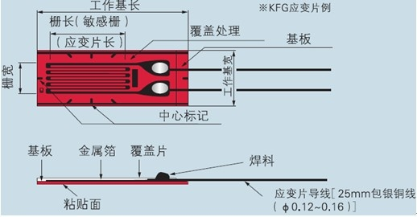
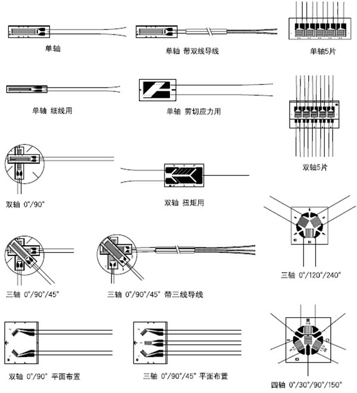
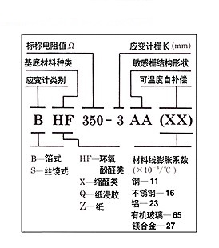
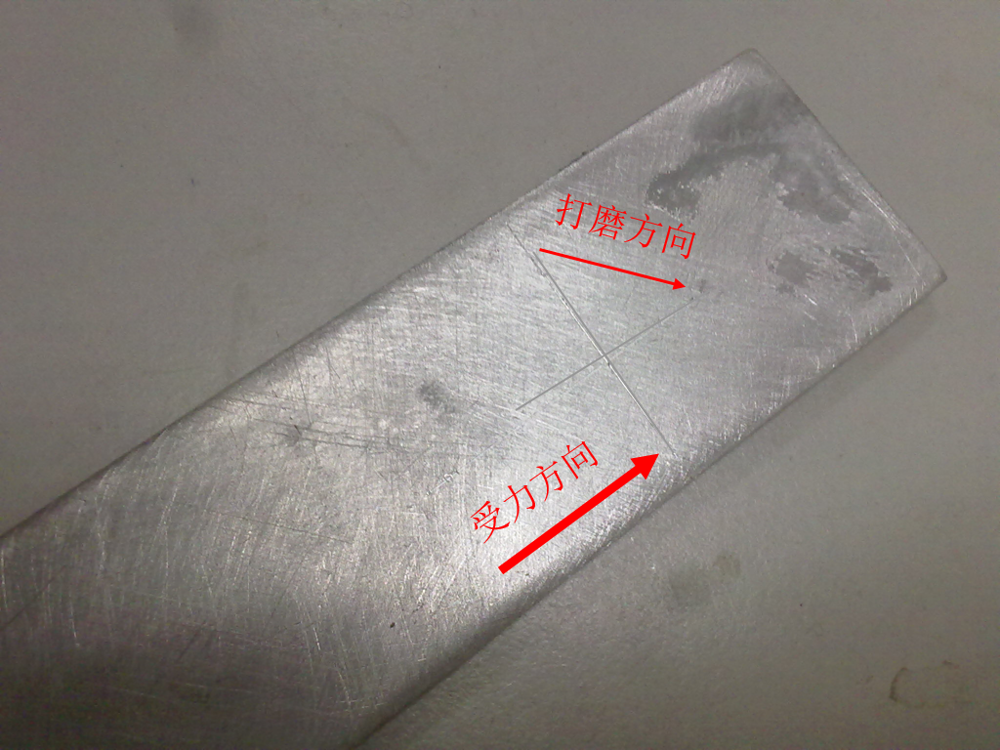
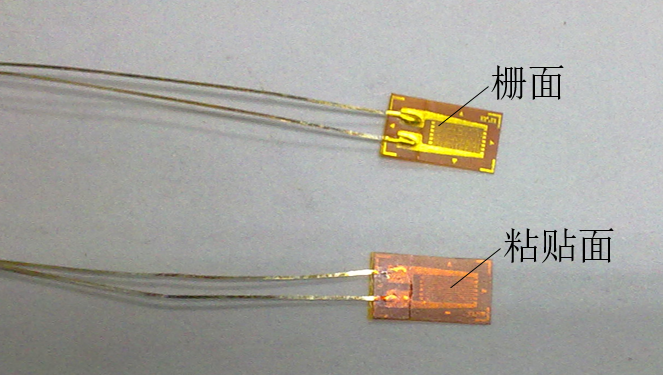

应变片的粘贴¶
应变片简介¶
应变片的规格多种多样，常见的应变片属于 电阻式应变片 ，是将被测的非电量转换成电阻值的变化，通过测量电阻值变化达到测量非电量的目的。电阻式应变片目前应用最多的是 箔式应变片 。
箔式应变片是在较薄的树脂材料的电绝缘体上，将金属箔蚀刻制成栅格形状，然后再安装引出导线的结构，如图1所示。

将单轴应变片按一定的形式可组合成不同样式的应变花。常见的应变片或应变花有以下种类：

应变片选购¶
应变片的命名规则如图。

以BX120-0.5AA为例，即箔式缩醛类应变片，阻值为120Ω，应变片栅长0.5mm。
关于应变片的选择，与测试环境等因素有关，BX型120Ω应变片适用于静态应变情况，对绝大多数土木工程领域实验均可胜任，也是教研室常选用的型号，关于其他型号，可参考网络上的其他 应变片选型解释 。
余下的最主要的是对应变片栅长的选择，用于混凝土应变测试的应变片要求敏感栅长度较长，箔式片的敏感栅长度宜用10、20、30mm；木材、玻璃的应变测量宜选用栅长为5mm的应变片。一般钢的应变测量宜选用栅长为1-6mm的应变片。应力集中测试宜用栅长为0.15-2mm的单或双轴5片型应变片。此外在应力梯度大的地方，宜选用小的栅长，因为应变片测得的是栅长范围内的平均应变。
单枚应变片一般用于测量单轴应变，应变花用于测量平面应力状态。材料泊松比的测量宜选用正交的双轴应变花。应力分析宜选用0/90/45度的三轴应变花。二轴90 应变花用于主应力方向已知的场合，三轴和四轴应变花则用于主应力方向未知的场合。
应变片粘贴步骤¶
下面以钢结构应变片粘贴为例说明应变片的粘贴方法
1.贴片前的工具准备 由于需要使用502强力胶水进行贴片，502胶凝结速度快，在此过程中，来不及寻找工具。所以粘贴应变片前一定要确保工具都在手边。需要准备的工具有：应变片、端子、镊子、脱脂棉、酒精、塑料薄膜、砂纸、电烙铁、焊锡和焊锡膏。
2.选择并清洁表面 选择需要测量的部位后，就要对该部位进行清洁，清洁表面的目的是为了应变片能够测量到钢的应变，而不是表面的杂质的应变，如铁锈、灰尘的应变。因此如果锈蚀严重或表面有油漆，可用 角向磨光机 进行打磨，再用细砂纸；如果锈较少，可用粗砂纸先打磨一遍，再用细砂纸打磨。
注解
角向磨光机 是一种危险性较高的实验机具，大多数情况下，并不需要使用，处于安全考虑也不建议使用。当需要使用时，请参考 角向砂轮使用注意事项
在贴片位置用细砂皮打磨成与受力方向成45°的交叉纹，这是为了增加材料与应变片之间的摩擦，避免粘贴应变片时出现打滑的现象，并可在粘贴位置用铅笔或锥子做标记如图。
最后用脱脂棉球蘸少量酒精擦拭表面。酒精挥发速度快，不久即可开始粘贴应变片。
注解
此处脱脂棉不可用纸巾代替，因为纸巾可能会留下纸屑影响实验结果。
2.粘贴应变片
从包装中取出应变片，应变片有两面，如下图所示。应变片引出线弯成45°方向，手捏住应变片引出线、粘贴面朝上，滴上少量502胶水，把多余胶水甩掉。甩的过程也有助于胶水均匀分布到表面。一手拿应变片对准画线位置后，另一手拿塑料薄膜快速固定应变片，用大拇指从引线端向尾端轻轻挤压三遍后，用力按住应变片1分钟，确保胶水干透。塑料薄膜的目的是防止拇指被胶水粘住。然后从引线侧轻轻揭开塑料薄膜。观察应变片颜色是否均匀，如果不均匀说明含有灰尘或者胶水分布不均，需要重新粘贴。

- 粘贴端子
由于引线较细，必须要通过导线才能实现应变片与采集箱的连接。引线与导线需要通过端子连接起来。首先在引线一侧偏移一定位置，用502胶水将端子粘牢，粘贴方法与应变片相同。端子粘贴面并不需要做清洁处理，但是也需要除去表面锈迹，保证胶水能够可靠粘接。端子在使用之前需要上锡，具体操作参考:端子焊锡
4.焊接引线 待端子粘贴牢固后，需要将引线焊接到端子上。具体操作为:一手用镊子夹住引线，将其按在端子上，一手用发热电烙铁侧面轻轻在端子的锡上一摁再抬起，使端子上的锡软化。抬起后锡迅速凝固，将端子与引线牢固焊接在一起。注意端子上引线必须全部溶入焊锡中，焊后引线要带有一定的弧线，不能成绷紧状态。否则可能会影响受力的大小。
5. 应变片检查 用将电表调到电阻200Ω档，将表笔两头分别放置在端子两极，观察读数。由于采用的是BX120系列，阻值应该在120Ω附近。如下图。